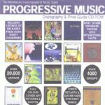

| Artist: | International Music Discographies Inc. |
| Title: | Progressive Music Discography & Price Guide |
| Year(s) of release: | 2000? |
| Month of review: | [05/2001] |
With this in mind consider the following: after finding the PROG.EXE file (but nowhere it is stated that that is how you should proceed and the file is umpteenth in the directory) on the disc it was simply clicking the program and after only a few administrational details I had everything installed to go. The data from the CDR is not copied to hard drive, so your drive stays busy. I have not tried, and have in fact no idea whether the program can be run from hard disc and although this will probably speed things up, whether the speed-up is worth it. There was one remark about copying certain dll's onto the hard disc to significantly improve speed. I did not do this, mostly because the speed was fine with me.
After reading the necessary and clear intro I went to work. Actually the program is a big database with a graphical user interface for accessing it. It seems to be based on Visual FoxPro. I start off with a look at the program and later talk about the contents, the database.
You start off by looking at the total list of items including a number of fields per item. Scaling the window does not help: you don't get more space which is a shame I think. Also, some fields are not available at this point, which is like the "browse" option in many databases (so you see a number of records at the same time). Clicking at the top on More Information also gets you stuff like price info and what kind of item we are talking about, like: is it a bootleg, is it a gold disc and so on. I would have liked the price (for VG+ and Mint copies) to be in the browse window as well. As a consequence of being here, there is no way what you can install filters that take the price into account.
What is a filter then? Well a way of saying you only want the bootlegs of Yes for instance. It does seem that things like: give me all artists starting with Yes and whatever follows is not possible: filtering is all based on equality of terms. And like I said, you can not filter for things of a certain price or what is more important: above a certain price. As a collector I would be interested to know which of my items go for big bucks. Having quite a number of items I would prefer not going through the 20000 titles by hand, but asking for expensive items by selecting Mint price to be $100 or over (and possibly lowering it after having looked through and finding nothing I happen to have). By the filter it is also possible to kill items that are bootlegs in the listing and since I am not interested in these, that is a good thing. Especially for the "bigger" bands there are plenty of bootlegs to go around (more than other items in fact).
It is easy to go the filter menu where it is also easy to indicate what you want. Separate, I found, from the filter is a way in which you can quickly select items that are 1) by a certain artist, 2) contain a certain song, 3) feature a certain artist. The latter two you could never do with the filtering itself, because line-up and track listing are not part of the filter.
One major problem with the musician and song selection is the following: say you are interested in Tony Levin (now that should give you a big listing of stuff right), but are not interested in the bootlegs. This is not possible! The latter has to be done by a filter, and the former by the extra option of selecting per musician. When I applied a filter to a view of Tony Levin stuff, it removed the restriction on Tony (and vice versa). I believe this should be possible.
The browse window can be sorted on whichever column you want, but the VERY strange thing is that you can not change this when you have a filter on your database. You CAN however change the ordering before applying a filter and then apply the filter. That does work. The fact that it does not work the other way around mystifies me.
One thing I missed was being to press page down and have it work like a scroll of some kind (this for instance did not work in the More Information part where you get the information for one item at the time). The Back and Forward button only work by mouse.
Sometimes data does not come into view when scrolling along: say I am looking at Peter Gabriel 1 and interested in the tracks on that album. It sometimes happened that after pressing Back/Forward to get there, it did not show the tracks, but they were there as I found out by scrolling the window where they should appear. However, the user only know it is there after scrolling and this I think it not very elegant.
The program does have a help function but also some tips and pointers throughout that help you quickly to guess what the purpose of something is. The program is quite intuitive to use.
The program also includes some lyrics, guitar tabs (but I saw none of them, so I guess they are not there often) and album covers (including some more graphics in some cases). However, all this information seems to be available for relatively few items (but I only made a rather random choice). The scans are rather coarse, but I do not mind thta: otherwise they would take up too much space and it is just to get an idea.
Okay, now to the database content. About the prices I can be simple: I have scanned only a few items, but it seems that things that are available simply have $20 for Mint and $10 for VG+, and maybe this holds for a good many of the items. There is however some variety in prices: the Theme One single by VDGG is listed at $50 for Mint. Make of this what you want, because I never buy expensive items so I hardly know what is worth what.
Now what I was interested in was the price listed for Echolyn's Suffocating The Bloom and the first selftitled one. But Suffocating was not even listed and neither was the selftitled disc. The mini Every Blossom was listed at $20 for mint (maybe a bit on the low side, but I really wouldn't know, my VG+ copy of last year costed $7). It is weird however that Echolyn is listed with four discs, but not these two (and not the most recent one, but is has not been out long).
When I told you, you could list items on which a certain musician played, what do you think you get when you take Mark Kelly? The result: two albums by Jump. Is there not Marillion then? Of course there are, but they do not have line-up listings so Mark Kelly does not appear there. Something similar: In The Court Of The Crimson King lists only Giles and McDonald as line-up. No others. Weird.
So although the facilities are there (and I really like that musician filter), the data is not. Tony Levin only plays on two bootlegs of King Crimson according to the database. In other words: the data on line-ups is very incomplete, and as a whole of little use. The same goes for track listing by the way. Many records do not have them and you can not really guess who has and who hasn't. I have no idea what kind of method was used, but I would hope that major items and bands are listed in the cddb database so the information IS available.
The database does also list quite a few of more obscure stuff like all discs by A Piedi Nudi. At times I got the impression that the author worked "by label". And Mellow Records and Cyclops are in it seems. The listing of a band like VDGG I found to be rather incomplete: many bootlegs, but only few orginal releases.
Since I am not a collector of any specific band, I can not say whether the extensive listings of Yes, or any other "big" band are fairly complete.